돈이 쓰이는 곳부터 찾아요
발표자가 처음 꺼내는 원칙은 '돈의 흐름을 따라가라'예요. 많은 사람이 재미 삼아 AI 인물부터 만들어 보다가 실패하는데, 순서가 거꾸로라는 거예요. 먼저 사람들이 어디에 돈을 쓰는지 보고, 그쪽에 AI를 지렛대로 쓰라고 해요.
영상 전체는 다섯 단계로 흘러가요. 발표자가 마지막에 직접 요약한 순서예요.
Claude에게 시장 분석 맡기기
발표자는 Claude에게 OnlyFans 시장을 크리에이터 분야, 팬의 감정 동기, 소비 행동, 애착이라는 네 갈래로 분석해 달라고 해요. Claude는 그림을 섞어 답해요. 첫 그림은 분야 지도예요. 원 크기가 매출 비중인데, 가장 큰 '성인' 원에 약 75%, 피트니스 원에 약 8%가 적혀 있어요. 나머지 코스프레, 라이프스타일, 음악 분야는 숫자 없이 작은 원으로만 나와요.
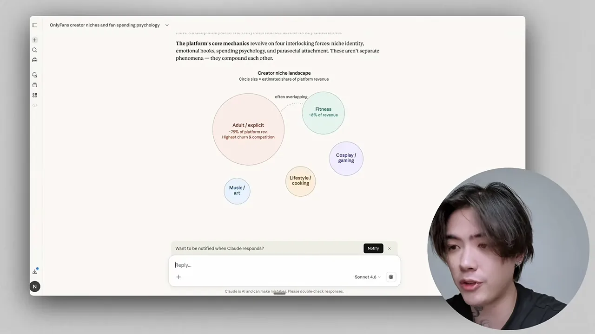
다음 그림이 발표자가 가장 강조하는 부분이에요. 왼쪽에 감정 동기 다섯 개가 있어요. 외로움과 친밀감, 인정 욕구, 판타지, 희소성(FOMO(Fear Of Missing Out)), 후원하고 싶은 마음이에요. 가운데는 월 구독, 팁, PPV(Pay-Per-View), 맞춤 요청, DM(Direct Message) 추가 판매 같은 소비 방식이고, 오른쪽은 그 결과예요. '상위 1% 팬이 매출의 50% 이상'이라는 고래 소비, 친밀감으로 온 팬이 빨리 떠나는 이탈 위험이 보여요.
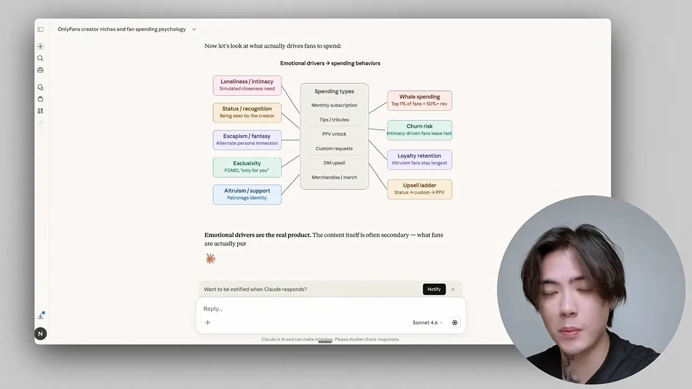
이어서 소비가 얼마나 한쪽으로 쏠리는지 보여 줘요. 위쪽 숫자 칸 네 개는 월 소비 중앙값 약 15달러, 고래 팬 평균 400달러 이상, 상위 1%가 매출의 약 50%, 구독료와 팁 비율 40 대 60이에요. 막대그래프에서 파란 막대(팬 비율)는 가벼운 팬이 60% 가까이로 가장 높아요. 주황 막대(매출 비율)는 고래 쪽이 가장 높아요.
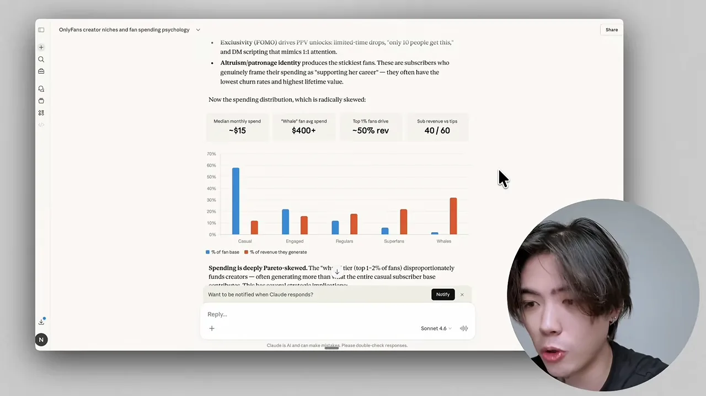
마지막은 가벼운 팬이 큰돈을 쓰는 팬이 되는 '애착 순환'이에요. 1번 발견(무료 콘텐츠, SNS(Social Networking Service)), 2번 첫 구독, 3번 강화(DM, 답장, 이름 불러 주기), 4번 깊은 애착(팁, 맞춤 요청, '가장 큰 팬'이라는 정체성)으로 내려가요. 왼쪽 갈래는 환상이 깨지거나 질려서 떠나는 이탈이에요.
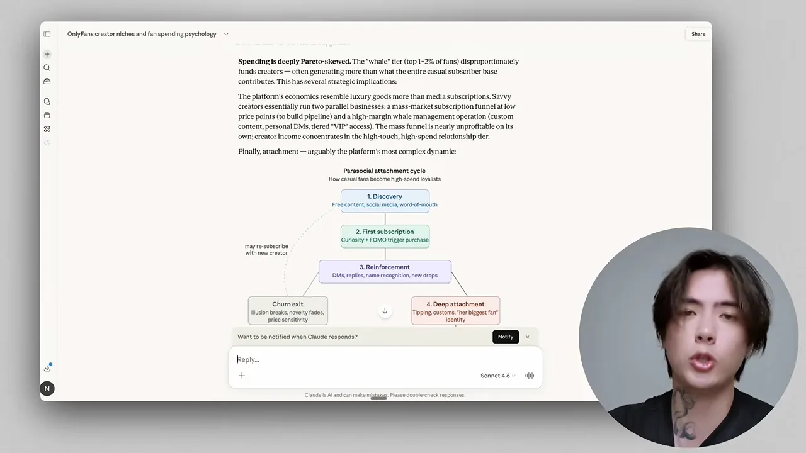
사람들은 콘텐츠에 돈을 내지 않아요
발표자의 두 번째 원칙이에요. 사진이나 영상만 보고 싶다면 공짜 성인 사이트가 넘쳐나요. 그런데도 사람들이 구독료를 내는 건 관심, 친밀감, 감정적 애착을 사기 때문이라고 해요. 발표자는 유명 성인 배우들이 OnlyFans로 옮겨 간 것도 같은 이유, 즉 돈이 더 되기 때문이라고 설명해요.
그래서 OnlyFans는 콘텐츠 판매가 아니라 '파라소셜 관계'를 파는 사업이라고 정리해요. 실제 유명 크리에이터의 인스타그램 계정을 많이 팔로우하고 콘텐츠를 보면서 감을 익히라고도 권해요.
페르소나와 '파는 이유' 만들기
시장 분석을 마친 발표자는 인물 콘셉트로 '수줍은 대학생 여자친구'를 골라요. 많은 남성의 첫사랑 같은 판타지라서, 몸보다 애착을 느끼게 하기 좋다는 이유예요. 사람들이 사랑에 빠지고, 돌봐 주고 싶어 해야 돈을 쓴다는 논리예요.
Claude로 페르소나 만들기
발표자가 Claude에 넣은 요청은 한 줄이에요. 21살 수줍은 대학생의 성격, 생활, 취미, 그리고 '콘텐츠를 파는 그럴듯한 이유'까지 담은 페르소나를 만들어 달라는 거예요.
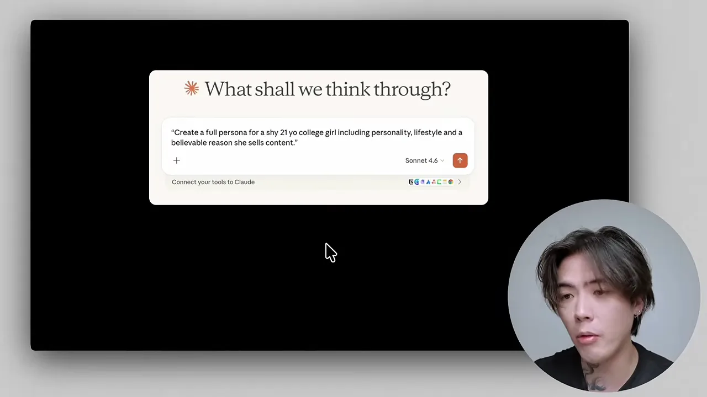
Claude의 답에는 인물 이름(Mia), 꾸민 듯 소박한 원룸, 따뜻한 톤의 피드 같은 생활 묘사가 들어 있어요. 가운데 'Why She Creates Content' 칸이 사연이에요. 2학년 때 장학금이 끊겨, 디자인 학비를 벌고 졸업 전에 포트폴리오를 쌓으려고 시작했다는 이야기예요. 아래 'Content Pillars'에는 작업 과정, 대학 생활, 느린 일상 같은 게시물 주제가 이어져요.
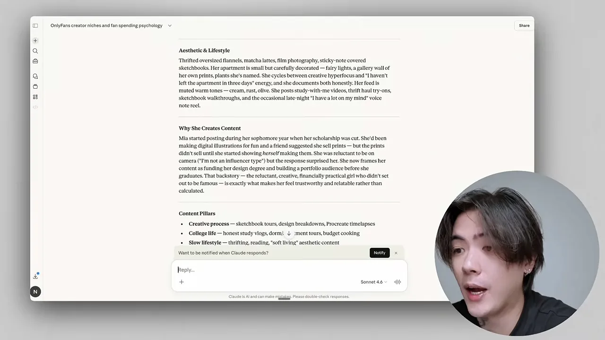
'파는 이유'를 알리바이라고 불러요
발표자는 이 사연을 대놓고 알리바이라고 불러요. 팬에게 돈을 달라고 할 때, 돈만 밝히는 사람으로 보이면 지갑을 닫는다는 거예요. 대신 첫 차를 사려고, 휴가를 한 번도 못 가 봐서, 부모와 사이가 나빠 학비를 혼자 벌어야 해서 같은 사연이 있으면 팬이 먼저 돈을 보내고 싶어 한다고 해요. 이걸 '구원자 증후군'을 일으킨다고 표현해요.
발표자는 Claude가 이런 요청을 거절할 수 있다고 미리 말해요. 그러면 질문을 '학업을 위해 정부 지원을 받으려는 이유'처럼 덜 노골적인 말로 바꿔 다시 물으라고 해요. 그렇게 받은 여러 사연 중 하나를 골라 인물의 배경 메모에 적어 두라는 거예요.
이유가 없으면 가짜처럼 보여요
발표자는 이 사연을 '정체성 만들기'의 두 번째 단계로 다시 강조해요. 화면에는 'NO REASON = FAKE'라고 적혀 있어요. 가수 매디슨 비어처럼 부자인 유명인이 돈이 필요하다고 하면 아무도 안 믿는 것과 같다는 비유예요.
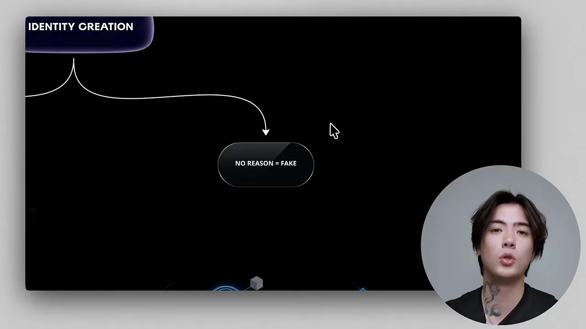
사람처럼 보이는 계정 꾸미기
사연을 정했으면 겉모습과 계정을 다듬을 차례예요. 발표자는 먼저 피부 질감이 어색한 AI 얼굴은 바로 티가 난다고 경고해요. 그리고 인물은 사람이어야 한다고 해요. 사람들은 관계를 찾는 건데, 요정이나 고양이 소녀와의 관계는 믿지 않는다는 거예요.
일상이 보여야 사람 같아요
'사람처럼 보인다'는 건 외모만이 아니에요. 학교에 가고, 친구와 점심을 먹고, 식당에 가는 일상이 피드에 보여야 해요. 셀카만 올리는 계정은 삶이 느껴지지 않는다고 해요. 발표자는 진짜 인플루언서들도 가족, 친구, 출근길, 먹는 것을 보여 준다고 덧붙여요.
아래 슬라이드가 이 단계를 정리한 문장이에요. 원하는 건 'AI가 만든 것 같은' 계정이 아니라, 실제 21살 학생이 운영할 법한 계정이에요. 사진, 게시물 아이디어, 캡션, 분위기가 모두 평범하고 가볍고 믿을 만하고 일관돼야 한다고 적혀 있어요.
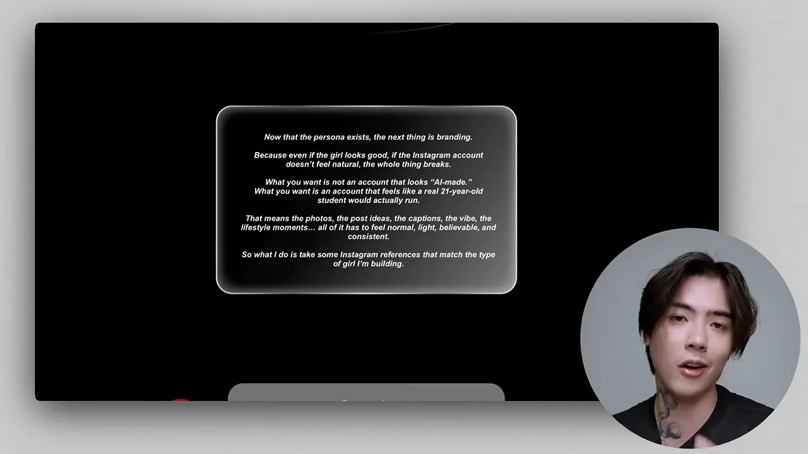
참고할 사진은 아마추어 느낌이어야 해요. 증명사진처럼 정면을 보는 전문가 사진은 진짜 같지 않다고 해요. 대신 거울 셀카, 카페 사진, 어질러진 방, 오늘의 옷차림, 헬스장 거울 사진, 공부하는 스토리 같은 것을 꼽아요. 발표자는 어린 여성들이 인스타그램을 어떻게 운영하는지 보려면 Tinder에 가 보라고까지 권해요.
실제 사진을 합쳐 얼굴 만들기
발표자는 Pinterest에서 '라티나 걸 에스테틱'을 검색해, 곱슬머리가 마음에 드는 실제 여성 사진 세 장을 캡처해요. 얼굴이 잘 보이는 사진이어야 한다고 해요. 이 캡처들을 Gemini에 넣고 사진을 합쳐 곱슬머리 여성의 사진을 만들어 달라고 하면, 그 결과가 AI 인물의 얼굴이 돼요. 발표자는 Google Workspace 요금제에 포함된 Gemini를 써요.
왜 자연스러운지 Claude에게 묻기
얼굴이 생겼으면 다음은 '삶'을 만드는 일이에요. 발표자는 인스타그램에 'AI model'이라는 저장 컬렉션을 만들고, 자기 인물에게도 시키고 싶은 사진을 모아 둬요. 그 사진들을 Claude에 보내 왜 자연스럽고 믿을 만해 보이는지 분석하고, 같은 느낌의 새 사진 콘셉트 10개를 만들어 달라고 해요.
슬라이드는 Claude에게 들어야 할 답을 네 가지 질문으로 정리해요. 구도가 왜 캐주얼해 보이는지, 옷이 왜 자연스러운지, 자세가 왜 억지스럽지 않은지, 배경이 왜 진짜 같은지예요.
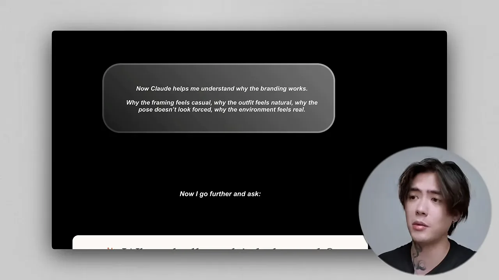
마지막으로 이 브랜딩과 페르소나에 맞춰, 실제 21살 학생이 올린 듯한 인스타그램 사진 프롬프트를 자세히 써 달라고 해요. 캐주얼하고, 부드럽고, 꾸미지 않은 느낌을 주문해요. 발표자는 이걸 '무작위 이미지가 아니라 믿을 만한 생활을 쌓는 일'이라고 불러요.
잘된 게시물의 구조를 옮겨 오기
콘텐츠를 계속 만들어 내려면 아이디어가 많이 필요해요. 발표자의 답은 '잘된 것을 베껴라'예요. 성공을 새로 발명할 필요 없이 최근 인기를 끈 게시물의 구조를 뽑아 오면 된다고 해요.
사진을 JSON 프롬프트로 바꾸기
방법은 실제 인스타그램 사진을 Claude에 보내 다시 쓸 수 있는 JSON 프롬프트로 바꿔 달라고 하는 거예요. 슬라이드에는 무엇을 남기고 무엇을 지우는지가 적혀 있어요.
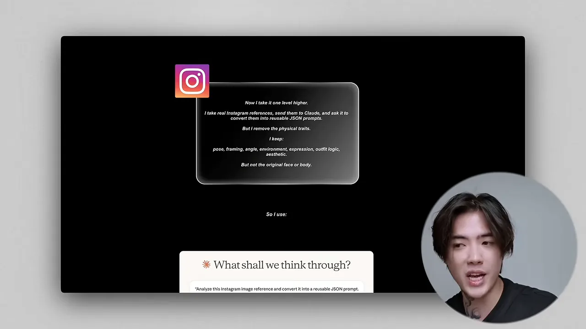
| JSON 프롬프트에 남기는 것 | 지우는 것 |
|---|---|
| 자세, 구도, 카메라 각도 | 원래 사람의 얼굴 |
| 표정, 옷 구성, 배경, 분위기 | 체형 등 신체 특징 |
이렇게 받은 프롬프트와 자기 AI 인물 사진을 함께 이미지 도구에 넣고, '프롬프트 속 사람을 이 사진의 사람으로 바꿔 만들어 달라'고 하면 같은 구도의 새 사진이 나와요. 발표자는 Gemini로 먼저 시연하고, 다른 이미지 생성 사이트로도 같은 과정을 보여 줘요. 결과에서 머리가 생머리로 나오면, 프롬프트의 머리 모양 값을 곱슬머리로 고쳐 다시 만들어요. Claude가 짜 준 자세한 프롬프트 덕분에 장신구나 옷 같은 작은 부분까지 바꿀 수 있다고 해요.
참고할 게시물은 AI 인물의 것만이 아니에요. 발표자는 실제 성인 크리에이터나 연예인의 게시물도 '터진 것'이면 된다고 말해요. 2주 만에 좋아요 6만 8천 개를 받은 사진을 예로 들어요. 영상은 이어서 사진을 더 선정적으로 고치는 수정도 보여 주는데, 이 문서에는 옮기지 않았어요.
감정이 느껴지는 계정과 인형 같은 계정
발표자는 두 AI 인플루언서 계정을 비교해요. 일찍 나와 유명해진 Emily Pellegrini 계정은 셀카와 사진만 이어져서 '바비 인형' 같고, 성격이나 영혼이 느껴지지 않는다고 평가해요. 다른 계정은 자기소개부터 진짜 사람 같고, 사진이 재미있거나 흥미롭고, 직접 아이폰으로 찍은 듯한 아마추어 느낌이라 사람들이 빠져든다고 해요. 피드 첫 화면은 이력서와 같아서, 잘 꾸미면 보러 온 사람을 구매자로 바꾼다고 설명해요.
바이럴을 설계하고 많이 올리기
발표자는 바이럴이 운이 아니라 설계라고 해요. 무작위로 올리면 수익도 운에 맡기게 된다는 거예요. 그래서 콘텐츠를 짐작하지 않고 거꾸로 분해해요.
잘된 영상을 셋으로 쪼개기
인스타그램 릴스를 많이 넘겨 보고, 피드에 뜨는 인기 영상을 'AI model' 컬렉션에 모아요. 그다음 Claude에게 이 영상의 후크, 리텐션, 보상을 분석해 달라고 해요. 보상은 영상의 마지막 장면이고, 발표자는 이게 특히 중요하다고 해요.
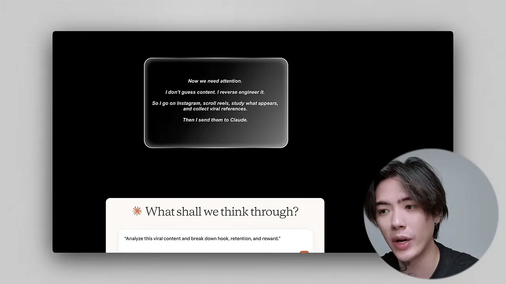
표로 정리하고 변형을 늘리기
분석한 패턴은 엑셀로 정리해요. 발표자는 Claude에게 AI 인물의 사연과 배경에 맞춘 짧은 영상 10편을 후크, 주의를 끄는 패턴, 보상 엔딩과 함께 엑셀 표로 만들어 달라고 해요. 그러면 '구조화된 콘텐츠'가 생긴다고 해요.
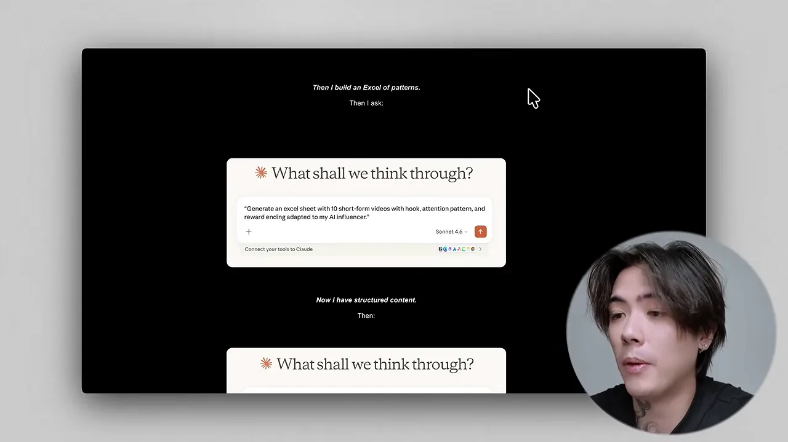
화면에는 'VIRAL CONTENT SYSTEM'이라는 빈 표가 나와요. 열은 후크, 참고 영상, 대본, 본문, 캡션 다섯 개예요. 발표자는 여기에 보상 열을 더해도 된다고 말해요. 이 틀을 채워 두면 Claude가 계속 새 콘텐츠를 만들어 낼 수 있다는 거예요.
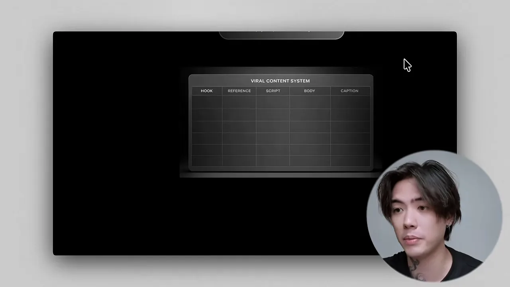
발표자는 이 과정을 카지노에 빗대요. 한 번만 거는 게 아니라, 유리한 전략을 가지고 여러 번 건다는 거예요. 많이 올려야 어떤 콘텐츠가 통하는지, 관객이 무엇을 원하는지 데이터가 쌓여요. 잘된 것이 나오면 섞고, 다시 20가지 변형을 만들어요.
팔로워를 구매자로 바꾸는 대화 시스템
팔로워가 늘고 영상이 터져도 팔로워는 돈을 내지 않아요. 발표자는 사람들을 '가게'인 구독 플랫폼으로 보내야 한다고 해요. 대부분은 팔로워와 조회수를 좇다가 실패하는데, 사업이 신경 써야 할 건 구매자라는 거예요.
화면 위쪽에 돈이 나오는 흐름이 한 줄로 적혀 있어요. 관심 → 대화 → 감정 → 구매예요. 아래 상자에서 발표자는 선을 그어요. Claude가 팬에게 답하는 게 아니라, Claude는 시스템을 만든다는 거예요.
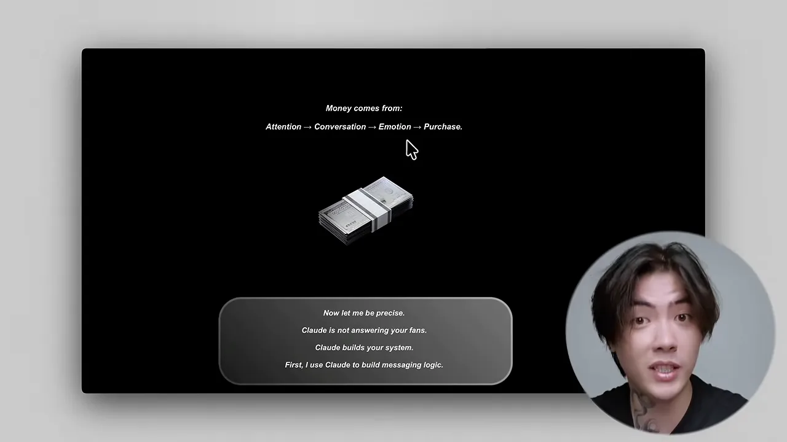
대화 각본과 DM 자동화
첫 요청은 대화 시스템이에요. 수줍은 AI 크리에이터를 위해 첫 메시지, 유대 쌓기, 구매 유도, 재참여까지 담은 각본을 만들어 달라고 해요. 자연스럽고, 너무 쉽게 응하지 않고, 현실적인 말투를 주문해요. 발표자는 '진짜 여자들은 남자에게 관심을 너무 많이 주지 않는다'고 이유를 대요. 두 번째 입력창은 Claude에게 대화 전략가 역할을 주고, 답장 틀과 구매 의사를 알아채는 기준을 짜게 해요.
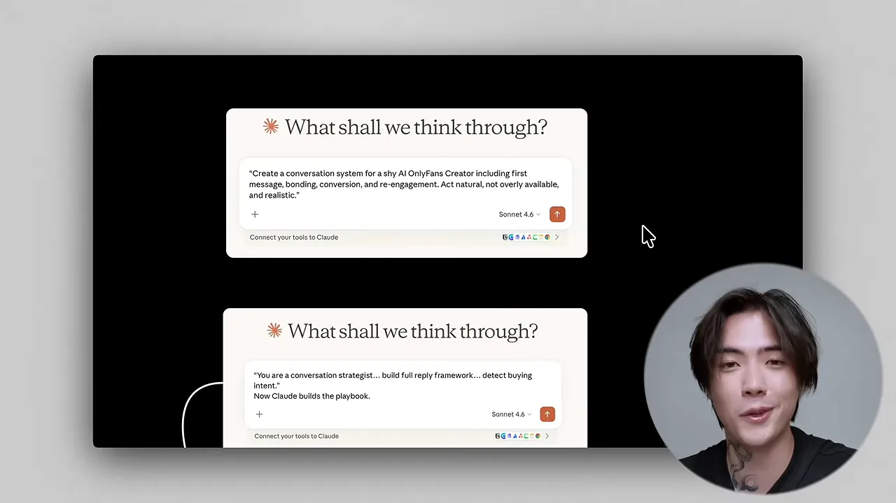
이 플레이북은 ManyChat에 옮겨요. ManyChat은 인스타그램 DM에 자동 응답 흐름을 거는 도구예요. 발표자는 ManyChat에서 만들 수 있는 자동화를 Claude가 설계하게 하고, 메시지가 많이 오는 AI 인물의 인스타그램 계정에 연결해요.
메시지를 분류하는 대시보드
그다음 Claude Code로 작은 대시보드를 만들어요. 위 상자에 하는 일이 네 가지로 적혀 있어요. 메시지 분류, 구매자 감지, 답장 추천, 대화 추적이에요. 아래 입력창이 실제 요청이에요. 메시지 분류와 답장 추천 기능을 넣고, 데이터는 SQLite에 저장하는 가벼운 대시보드예요.
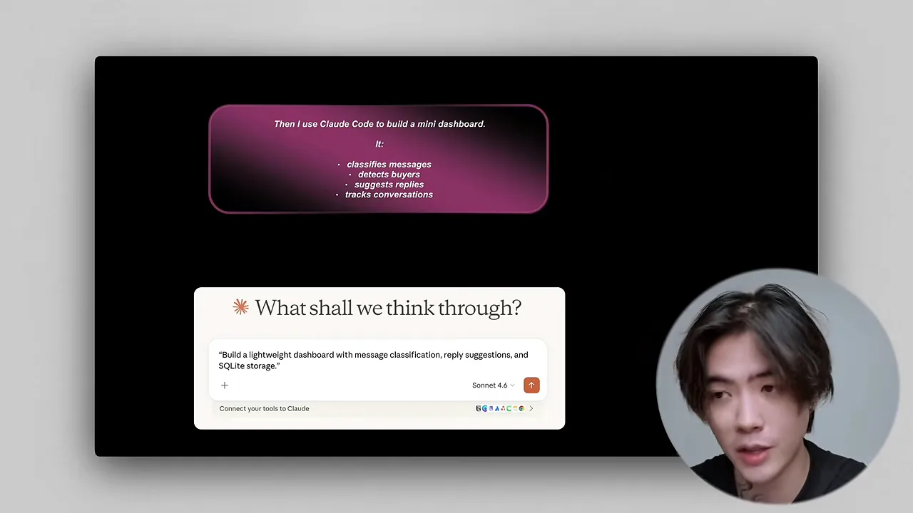
완전 자동이 아니라 반자동화예요
발표자가 여러 번 되풀이하는 말이에요. 화면의 말풍선 두 개에 '자동 조종이 아니라 반자동화', 'AI는 구조를 맡고, 감정은 당신이 맡는다'라고 적혀 있어요.
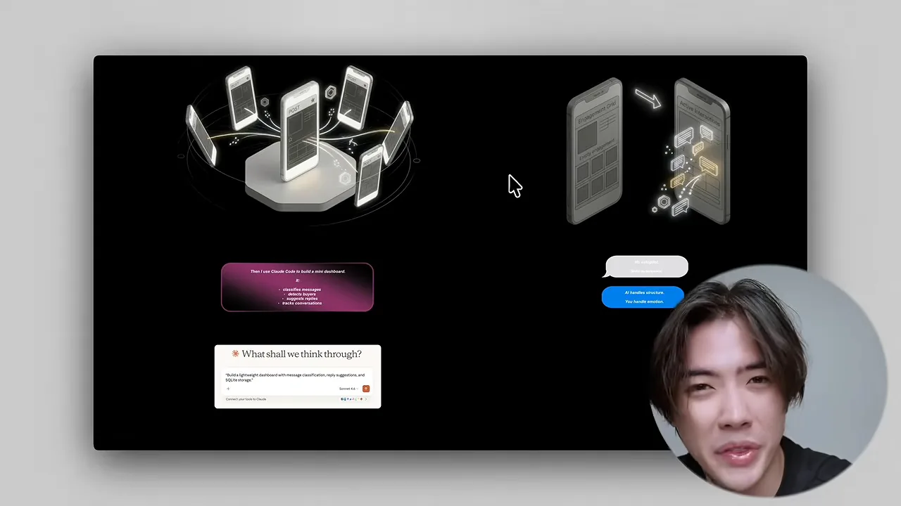
메시지 하나가 지나가는 길을 그리면 이래요. 발표자가 40:02에 말로 설명하고, 화면 아래에 작은 글씨로 적어 둔 순서예요. 다섯 단계 중 사람이 하는 건 답장을 보내는 한 단계뿐이에요.
발표자가 정리한 역할 나누기를 표로 옮기면 이래요.
| Claude가 맡는 일 | 사람이 맡는 일 |
|---|---|
| 대화 각본과 답장 틀 만들기 | 실제로 채팅하기 |
| ManyChat 자동화 설계, 대시보드 만들기 | 감정을 담아 관계 쌓기 |
| 대화 정리, 진지한 구매자 골라내기, 답장 준비, 기록 | 판매, 곧 '감정 파트' |
발표자는 'AI는 관계를 대신하지 않고, 정리할 뿐'이라고 말해요. 다만 팬 쪽에서 보면 대화 상대는 처음부터 지어낸 인물이에요. 실제로 답장을 보내는 사람이 인물 뒤의 다른 누구라는 점은 영상에서 다루지 않아요.
어느 플랫폼에서 파나요
발표자는 하루하루를 혼란 없이 굴리는 법도 결국 같은 원칙이라고 말해요. 이 사업은 콘텐츠가 아니라 연결이 핵심이라는 거예요. 그래서 조회수는 많은데 못 버는 계정이 있고, 인스타그램 팔로워 1,000명으로 하루 수천 달러를 버는 계정도 있다고 해요. 대부분은 올리고, 메시지를 받고, 그게 돈이 되길 바라기만 한다고 지적해요.
OnlyFans에는 AI 인물로 가입할 수 없어요
영상 마지막에 발표자가 직접 밝히는 중요한 사실이에요. 슬라이드에는 'AI 인플루언서로는 일반 OnlyFans 계정을 만들 수 없다, 본인 인증이 있다'고 적혀 있어요. 사람이어야 계정을 만들 수 있으니, 'AI OnlyFans 걸'이라는 말은 정확하지 않다고 해요.
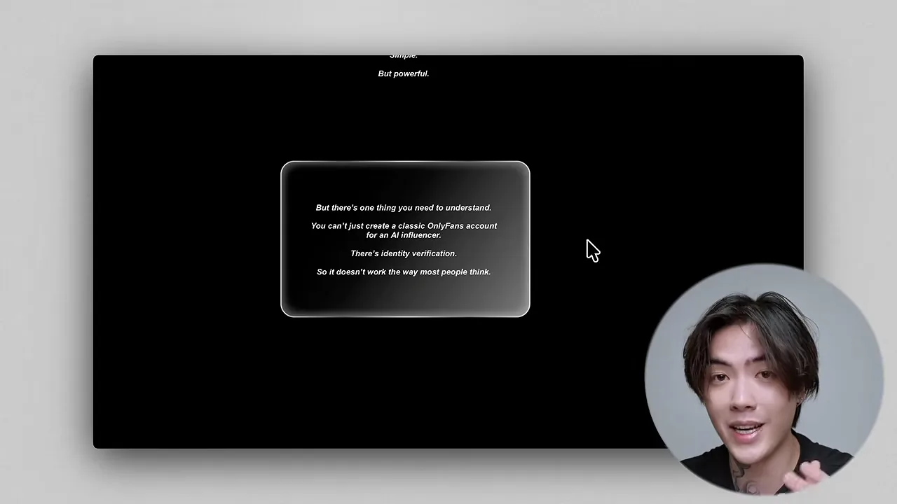
그래서 발표자는 AI 크리에이터용으로 만든 비슷한 플랫폼을 써요. 예로 드는 곳이 Fanvue예요. 운영자 본인의 신분증으로 가입하고, 본인 계좌로 수익을 출금하고, 인물은 AI 페르소나로 둘 수 있어서 AI 크리에이터에게 더 유연하다고 해요. 다른 결제 링크 서비스도 있다고 덧붙여요.